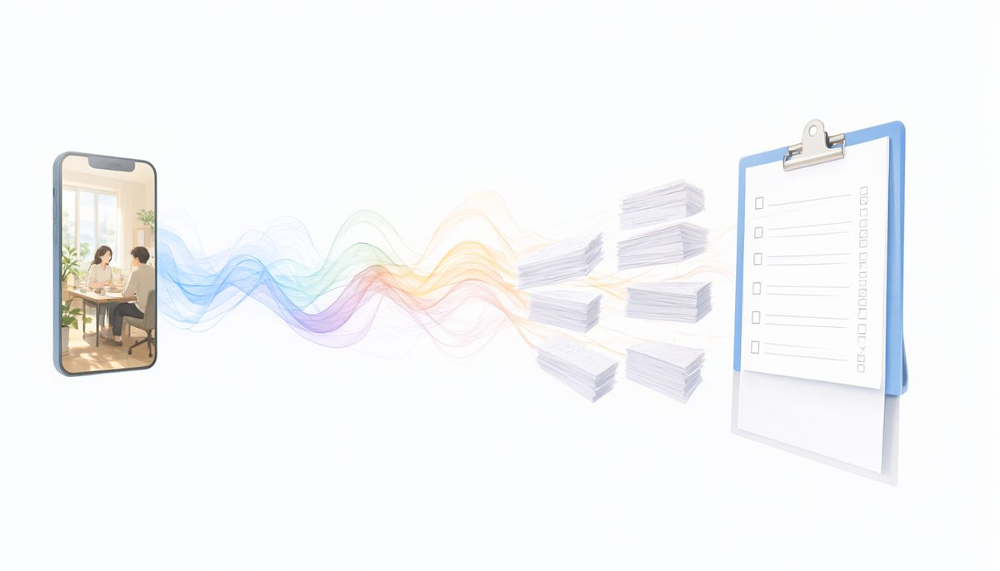
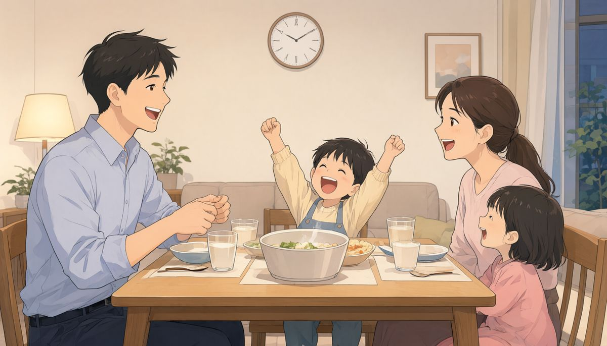
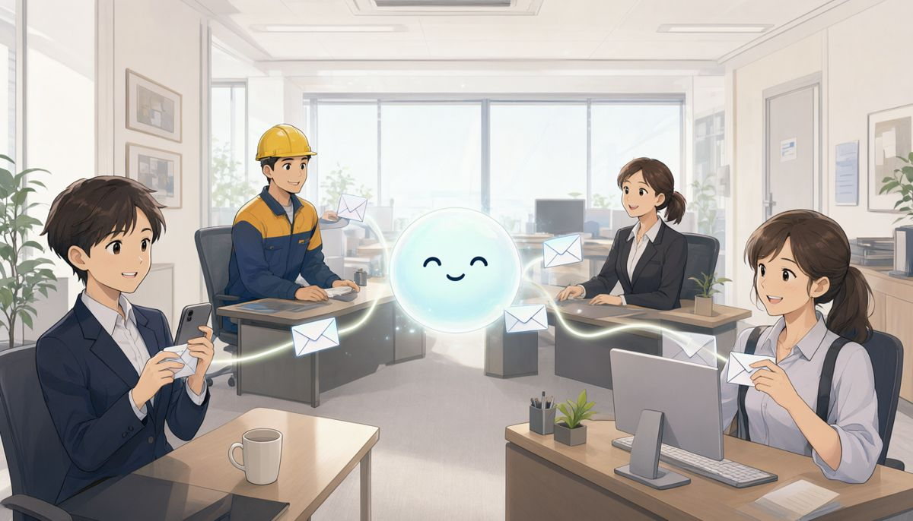
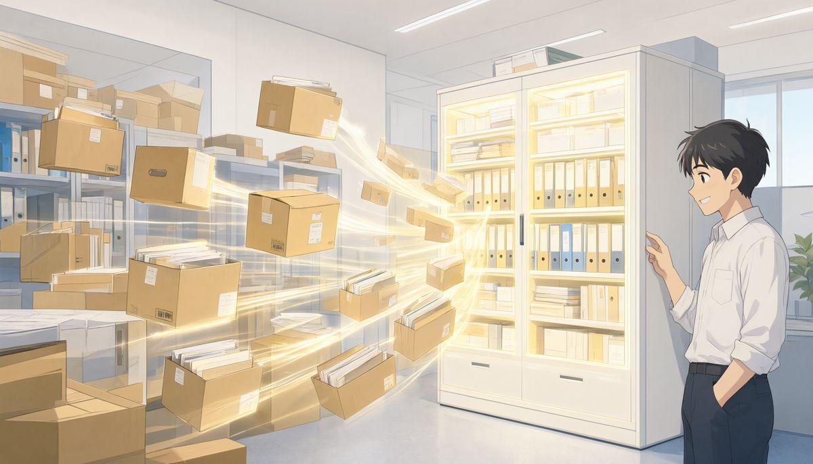

WHATどんなソフト？

録る。あとは全部、自動。
今までは、会議のあとに記憶とメモを頼りに議事録を書いていました。これからは、スマホで録音ボタンを押すだけ。会議の言葉がまるごと文字になって残ります。
超議事録は、録って文字にする言霊エンジンと、記録に聞けば答える弁天の、2つでできています。
まとめの議事録だけではありません。誰が・何を・どう言ったかの全文と、元の音声まで残るので、「言った・言わない」で揉めることがなくなります。
STORYつくった思い
議事録のための残業を、
家族との夕食の時間に。
会議が終わってから、記憶とメモを頼りに議事録を書く。大事な一言ほど、あとで思い出せない。そんな毎日を変えたくて生まれました。
記録はソフトに任せて、人は話すこと・決めることに集中する。早く帰れる日が、少しずつ増えていきます。

記録を残すのは、責めるためではなく、安心して話すため。言った事がちゃんと残っている――それだけで、打ち合わせはずっと気楽になります。
FORこんな人に
- 打ち合わせや商談が多い人
- 議事録づくりに時間を取られている人
- お客様との約束を、確実に残したい人
- 先輩の知恵を、会社に貯めていきたい人
FEATURESできる事
全文と音声を残す
話した言葉はすべて文字に。元の音声も一緒に残るので、聞き直しもできます。
記録に聞けば答える
「あの件、何て決めたっけ？」と聞けば、過去の記録から答えを探します。

必要な人に届く
今までは議事録を書いて配る手間がありました。これからは、関わる人のもとへ記録が届きます。

知恵が貯まる
社内でしか通じない言葉や商品の名前も、正しく文字になります。先輩の知恵や昔のいきさつも、会社の財産として残ります。

小さなマイクで
胸元のピンマイクにも対応。離れた席の声もはっきり拾います。
しっかり守る
記録は決まった人だけが見られる場所に、大切に保管します。
FLOW使い方
ALL CONNECTED最後に、ひとつだけ。
ここまで見てくださった、察しのいいあなたなら、もうお気づきかもしれません。

KAI のソフトは、全部つながります。
どれか1つを入れていただければ、ほかのソフトも同じ所から、いつでも足していけます。使うソフトが増えるほど、毎日の仕事はもっと軽く、もっと楽しくなります。
- 契約するだけ むずかしい準備はいりません。
- 明日から 思い立ったら、すぐに始められます。
- 誰でも、すぐ全部 どなたでも、すべての機能をすぐにお使いいただけます。
そして、もうひとつ。「こんな機能があったらいいのに」というご希望があれば、遠慮なくお聞かせください。足していける作りだからこそ、あなたの欲しい機能を柔軟に取り入れて、形にできます。
御社の野望のお手伝いをします。